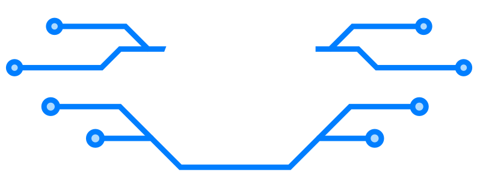
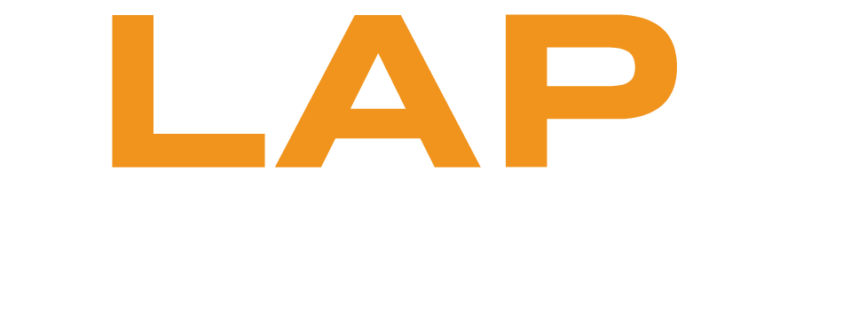

ASI KARIKAS ON IT-VÄLJAKUTSEID PAKKUV VÕISTKONDLIK PROGRAMMEERIMISVÕISTLUS KOOLIÕPILASTELE
Võistlust korraldavad Tallinna Tehnikaülikooli Arvutisüsteemide Instituut ning tudengite organisatsioon tarkvaraarenduse klubi MTÜ Lapikud.

Võistlus jaguneb kolmeks vooruks:
I voor on individuaalne ning toimub kaugelt ehk saad lahendada kodust lahkumata. I vooru väljakutse sisaldab kolme väikest ülesannet ühe TalTechi tudengi lõputöö raames valminud mikrokontrolleri simulaatori peal. Esitada tuleb lahendused vähemalt kahele ülesandele kolmest ning lisaks üks endapoolne ülesande tekst ning vastav programmike. Õigeks ajaks töötavad lahendused esitanud võistlejaid tunnustatakse I vooru läbija meenega.
II voor on võistkondlik (tuleb registreerida 2–4-liikmeline võistkond) ning toimub kaugelt ehk saad lahendada kodust lahkumata. II vooru väljakutse sisaldab kahte ülesannet, mis võivad olla seotud veebi-, mobiili- ja/või mänguarendusega. Esitada tuleb lahendus vähemalt ühele ülesandele kahest, kuid mõlema esitamine võib anda rohkem punkte. Lisaks tuleb esitada 5-10 minuti pikkune video. Õigeks ajaks lahenduse/d ja video esitanud võistkondade liikmeid tunnustatakse osavõtudiplomi ning II vooru läbija meenega. Kaks parimat võistkonda valitakse lõppvooru.
Lõppvoor on võistkondlik ning toimub 13. märtsil 2027 kohapeal Tallinna Tehnikaülikooli Mektory majas. Lõppvooru valitakse kaks parimat 2–4-liikmelist võistkonda vastavalt II vooru ülesannete lahendustele ning saadud punktiskoorile. Lõppvooru väljakutseks on üks ülesanne, mille lahendamiseks on aega neli tundi. Ülesanne avalikustatakse finalistidele lõppvooru toimumispäeval. Lõppvoorus osalejad pälvivad TalTechi IT-teaduskonna Talendipileti ning erinevaid auhindu meie sponsoritelt vastavalt 1. või 2. koha saavutamisele. 1. koha võitnud võistkond pälvib "ASI Karikas 2027 võitja" tiitli.
Kuidas osaleda?
Loe iga vooru kohta täpsemalt: I voor, II voor, lõppvoor ning tutvu üldiste reeglitega siin!